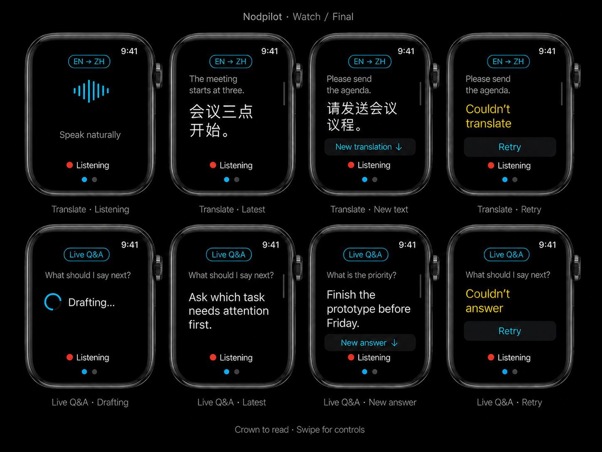
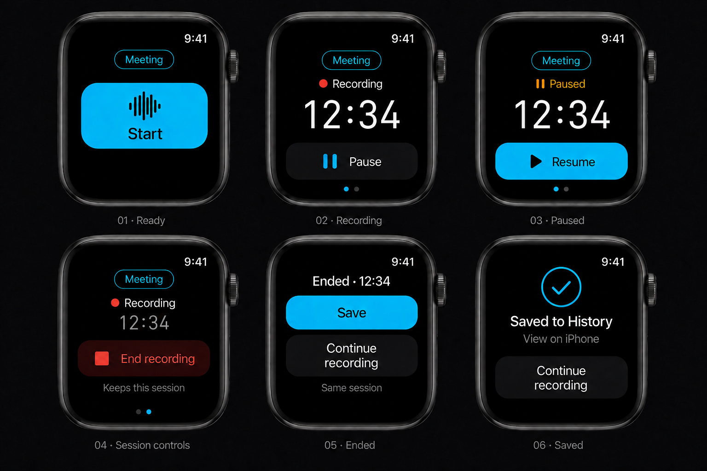
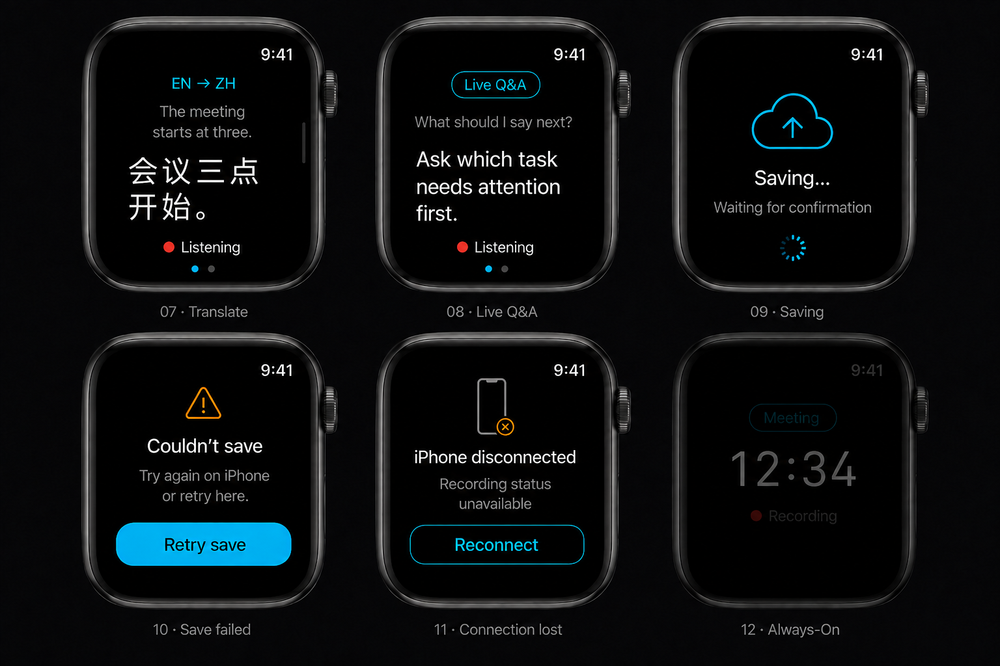

Nodpilot Watch · 完整设计 v3
2026-09-08 整合修订 · 录音控制、翻译与 Live Q&A、异常反馈及动效
抬腕看清当前内容：原文或问题在上，译文或回答为主。保留黑底青色、模式胶囊与 Start，以及原有保存和继续同一会话语义。
本次定稿：翻译与 Live Q&A 统一正文左对齐，加入新内容提示与局部重试，等待页只保留一处 Listening。阅读设计以第三张最终图和专项说明为准。
阅读翻译与 Q&A 设计稿 →完整 Watch 方案 →翻译与 Live Q&A · 最终稿
上排翻译，下排问答，共八个状态快照。涵盖等待或生成、正文阅读、新内容提示、失败重试。


录音与保存 · 沿用
Ready、Recording、Paused、Session controls、Ended、Saved。保存需真实确认，继续录音保持同一会话。

通用反馈与常亮 · 保留参考
此旧画板中的 Translate / Live Q&A 两格已由上方最终图替代。其余 Saving、Save failed、Connection lost、Always-On 四格继续参考。

原有动效示例
继续保留 v3 的待命、聆听、思考、暂停、保存等模拟动效。本次未扩展其中的阅读交互；新内容提示和阅读失败重试请以最终图及专项设计稿为准。
打开原有动效示例 →示例使用模拟输入与延迟，不读取麦克风或访问账号；不代表原生 Watch 功能、触觉、续航或真机验证。